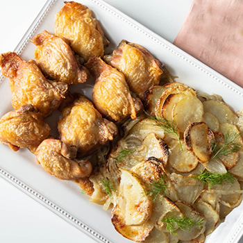

Yummy Yum Yum!
International cuisine in the comfort of your own home
Truffle Chicken & Potato Gratin
Prep: 20m | Cook: 1hr 05m | Ready: 1h 25m | Serves: 2-4

A luxurious creamy chicken, potato gratin, and truffle. A delightful comfort dish to enjoy during the winter season.
Ingredients
- 2 chicken legs with the skin on
- 1 tbsp salted butter, softened
- 1 small black truffle, sliced into very thin discs
- 125ml double cream
- 125ml chicken stock
- 1 garlic clove, peeled
- 1 bay leaf
- 8 sage leaves
- 500g potatoes, peeled and finely sliced
- 15g parmesan cheese, finely grated
- Watercress salad to serve
Ready, Steady, Yum!
- Rub ¼ tbsp butter between the skin and flesh on each chicken leg
- Gently place half of the truffle discs on top of the butter
- Season the skin and set aside in the fridge
- Simmer the double cream and stock together with the garlic cloves, remaining truffle, bay and sage
- Set aside to infuse for 30 minutes
- Heat the oven to 180C/160C fan/gas 4
- Butter the inside of a shallow baking dish
- Layer the potatoes, adding the truffle slices from the cream between the layers along and season
- Strain over the infused cream and stock mixture
- Sprinkle over the parmesan cheese
- Scatter over the remaining sage leaves
- Place the chicken legs on top, brush the legs with the melted butter
- Roast for 1 hour until the potatoes and chicken are golden and cooked
- Leave to rest for 10 mins allowing the chicken juices to drip into the potatoes
- Serve with a watercress salad
Would you like to try a different main Course? We recommend...